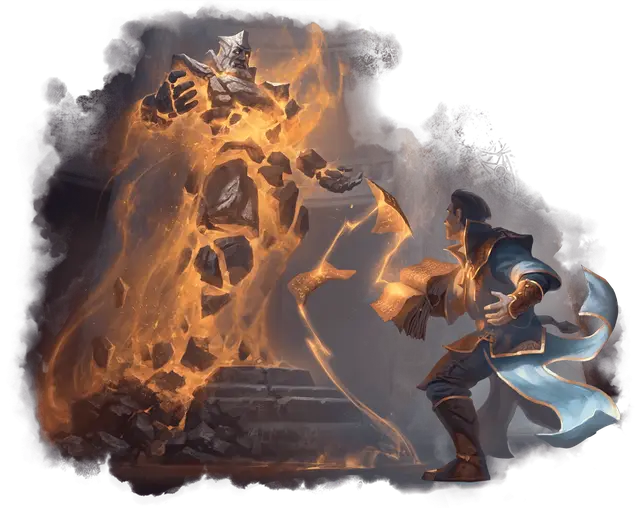

Талисман–статуя духа
Spirit Statue Mascot
Средний Конструкт, любое мировоззрение

Класс Доспеха 14 (природный доспех)
Хиты 26 (4к8 + 8)
Скорость 30 футов
| мод | спас | ||
|---|---|---|---|
| СИЛ | 14 | +2 | +2 |
| ЛОВ | 9 | −1 | −1 |
| ТЕЛ | 15 | +2 | +2 |
| мод | спас | ||
|---|---|---|---|
| ИНТ | 12 | +1 | +1 |
| МДР | 13 | +1 | +1 |
| ХАР | 8 | −1 | −1 |
Навыки Восприятие +3, История +5, Магия +5
Чувства пассивное Восприятие 13
Языки Любые языки, которые статуя знала при жизни.
Опасность 1/4 (50 опыта)
Бонус мастерства +2
Особенности
Предсмертная вспышка. Когда хиты статуи духа опускаются до 0, статуя разрушается, а дух возвращается в мир мёртвых во вспышке призрачно-белого пламени. Все существа в пределах 5 футов от него должны преуспеть в спасброске Телосложения Сл 12, в случае провала получая 3 (1к6) урона излучением.
Действия
Удар. Рукопашная атака оружием: +4 к попаданию, досягаемость 5 футов, одно существо. Попадание: Дробящий урон 5 (1к6 + 2).
Совет из прошлого (2/день). Статуя духа касается одного существа. Единожды в течение следующих 10 минут это существо может бросить к4 и добавить выпавшее число к одной проверке характеристики по своему выбору, сразу после броска к20.
Описание
Чтобы углубить изучение прошлого, студенты Лорхолда часто обращаются к духам умерших существ. Маги, ищущие более долгосрочной помощи от древних духов, научились помещать их в статуи, давая им более постоянное место жительства, из которого они могут помогать живым.
Некоторые из этих статуй духов связывают себя с конкретным магом и наставляют его, но большинство служат в различных ролях для множества людей, начиная от коллег-исследователей и заканчивая боевыми тактиками. Несмотря на это, их можно встретить в кампусе Лорхолда так часто, что они стали талисманами факультета.